La Teoría de la Información es una teoría matemática creada por Claude E. Shannon y Warren Weaver en el año 1948 y que forma la piedra angular sobre la que se ha desarrollado toda la teoría actual de la comunicación y la codificación.
 Archivos y Software
Archivos y Software
CAPITULO 2: INTRODUCCIÓN A LA TEORÍA DE LA INFORMACIÓN
INTRODUCCIÓN A LA TEORÍA DE LA INFORMACIÓN
La teoría de la informacion se encuenta aun hoy en día en relación con una de las tecnologías en toda, Internet. Desdde el punto de vista social, Internet representa unos significativos beneficios potenciales, ya que ofrece oportunidades sin precedentes para dar poder a los individuos y conectarlos con fuentes cada vez más ricas de información digital.
Dado un conjunto de mensajes posibles que una fuente puede producir, ¿Cómo deben representarse estos mensajes para que la información sea conducida de la mejor manera sobre un sistema dado con sus limitaciones fisicas inherentes?
La teoría de la informacion es un tema matemático que trata con tres conceptos básicos:
- La medida de la información
- La capacidad de un canal de comunicación para transferir información
- La codificación como un medio de utilizar los canales a toda su capacidad
CONCEPTOS IMPORTANTES
Información
La alternativa se aplica a todos los conjuntos de caracteres construidos de las siguientes formas:
- Las señales en este contexto se refieren a elementos que transportan información y permiten tomar decisiones. Estas señales, que pueden ser letras, palabras, números u ondas, actúan como medios para reducir la incertidumbre del receptor, ofreciendo opciones que facilitan la distinción entre alternativas.
- En este proceso, la interacción entre las señales y el receptor genera una dinámica en la que la selección de una opción depende de las alternativas presentadas. La incertidumbre es un factor clave, ya que el receptor debe procesar las señales y decidir cuál es la más adecuada dentro de las opciones disponibles.
Relaciones de logaritmos
La representación logarítmica es una representación gráfica de una función o cantidad. Los ejes horizontal y vertical son una lista de números en una escala logarítmica o una curva de medialínea. Para la visualización manual, se utiliza papel logarítmico.
Cantidad de la información
Está pensado como una medida de una combinación particular de discapacidad o especificidad. La entropía puede verse como una medida de incertidumbre e información. Requerido para limitar, reducir o eliminar la incertidumbre en todos los procesos. El concepto de información y el concepto de entropía están básicamente interrelacionados.
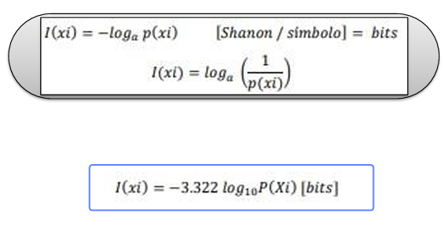
Probabilidades
La probabilidad es la medida de la posibilidad de que ocurra un evento específico. Gracias al cálculo matemático, se puede simplificar el proceso de obtener una probabilidad, proporcionando una expresión más accesible para calcularla.
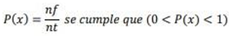
Frecuencia relativa
La frecuencia relativa viene dada por el resultante entre la frecuencia absoluta de un valor dado entre la sumatoria de los datos totales de la probabilidad.
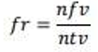
Modelo Matemático
- Definición: Una fuente discreta de información es un proceso aleatorio de tiempo discreto
- Definición: Una fuente de información discreta sin memoria es un proceso
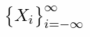
que toma valores en un alfabeto X, el que a su vez puede ser continuo o discreto.
que toma valores en un alfabeto discreto finito y donde cada símbolo es producido en forma independiente e igualmente distribuida.
ENTROPÍA DE UNA FUENTE
Si es una fuente discreta y sin memoria, entonces el contenido de información de una fuente X es igual a
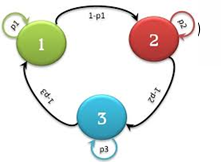
- Si la base del logaritmo es 2 la información se mide en bits.
- Si la base del logaritmo es e la información se mide en nats.
- La entropía es una función continua de p = (p1,...,pN).
- H(p) ≥ 0 y H(p) =0 si y sólo si pn = 0 para todo n excepto por un símbolo.
- Dado N, H(p) ≤ logN y son iguales si y sólo si pn = 1/N.
- H(p) es concava en p.
FUENTES DE MARKOV
Hasta este momento se ha considerado las fuentes de memoria nula, pero en la mayoría de los casos reales los símbolos del alfabeto no tienen probabilidades fijas, sino que dichas probabilidades dependerán en general de los símbolos emitidos. A este tipo de fuentes se les denomina fuentes de Markov.
Supongamos que un sistema evoluciona con el tiempo. En cada instante t cada parámetro tendrá unos valores determinados. Cada colección de esos valores define lo que llamamos estado del sistema. La evolución es tal que en unos instantes determinados el estado cambia o permanece fijo. Es decir que en cada instante el sistema evoluciona con una transición de un estado a otro, o bien permanece en el anterior.
- Se dice que una fuente de Markov es ergódica, cuando siendo estacionara las probabilidades de estado tienden a estabilizarse y hacerse constantes cuando t ▬►∞. A esta distribución límite de probabilidades se le denomina régimen permanente de la fuente, o sea que cuando una fuente entra en un estado y queda atrapado en él.
- La condición necesaria y suficiente para que una fuente sea ergódica es que si Pij es la matriz estocastica de la fuente y p1,p2......pn cantidades desconocidas que representan a las probabilidades de estado, se tiene que cumplir que:
- Pj = ∑Pj Pij/li>
- sea compatible y la distribución estacionara.
Capacidad de transmisión de un canal
La capacidad del canal se mide en bits por segundo (bps) y depende de su ancho de banda y de la relación S/N (Relación señal/ruido). La capacidad del canal limita la cantidad de información (se denomina régimen binario y se mide en bits por segundo, bps) que puede trasmitir la señal que se envía a través de él. La capacidad del canal depende de la naturaleza del soporta, es decir, de los portadores canales de gran ancho de banda, como la fibra óptica, su capacidad siempre tiene un límite. Nyquist demostró la existencia de ese límite cuando se envían señales digitales por canales analógicos.
La teoría de la información, desarrollada por Claude E. Shannon durante la Segunda Guerra Mundial, define la noción de la capacidad del canal y provee un modelo matemático con el que se puede calcular. La cifra que resulta del estado de capacidad del canal, se define como la máxima de la información mutua entre la entrada y la salida del canal. Donde el punto máximo se encuentra en la entrada de la distribución.

- El ancho de banda se mide como la cantidad de datos que se pueden transferir entre dos puntos de una red en un tiempo específico.
- Normalmente, el ancho de banda se mide en bits por segundo (bps) y se expresa como una tasa de bits.
- El ancho de banda denota la capacidad de transmisión de una conexión y es un factor importante al determinar la calidad y la velocidad de una red.
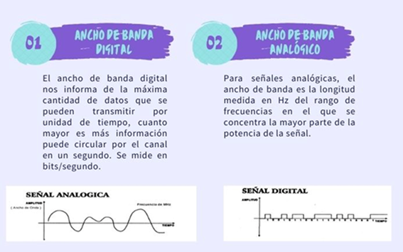
Relación señal/ruido
La relación señal-ruido, S/R o del inglés SNR (Signal to Noise Ratio) se define como la proporción existente entre la potencia de salida de la señal que se transmite y la potencia del ruido que la corrompe (por lo tanto, hablamos únicamente de dispositivos que emiten sonido y nunca de dispositivos que lo captan). Este margen se mide, como casi todo lo relacionado con el audio, en decibelios.
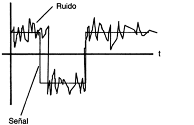
Velocidad de Modulación
Es el número de sucesos (eventos), o cambios de señal, que se producen en 1 segundo. Se mide en baudios. (En un evento de cambio de señal se pueden representar uno o más bits de información, por lo que esta medida no corresponde con la velocidad de transmisión).
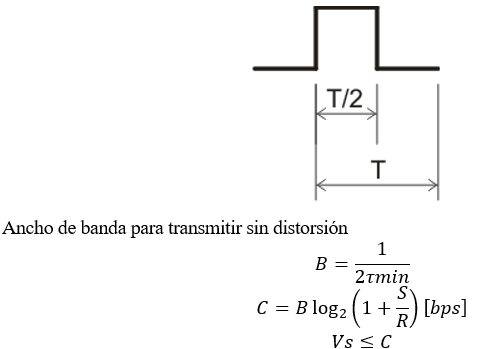
Codificación de las fuentes discretas sin memoria FDSM
- Alfabeto código y alfabeto fuente
- Código bloque
- Códigos unívocamente decodificables
Denominemos a 𝑆={𝑆1,𝑆2,...,𝑆𝑞} al conjunto de símbolos de un alfabeto dado. Se define un código como la correspondencia de todas las secuencias posibles de símbolos de S a secuencias de símbolos de algún otro alfabeto a X={𝑋1,𝑋2,...,𝑋𝑞}. S recibe el nombre de alfabeto fuente, y X alfabeto código.
Los datos (símbolos binarios o bits) se segmentan en bloques de k-bits, donde k es la longitud de bloque. Cada bloque de información puede representar uno de M = 2k mensajes diferentes. El codificador transforma cada bloque de información en un bloque mayor de n bits (n > k) añadiendo n-k bits redundantes de una manera predeterminada. Cada bloque de n bits constituye una palabra de código contenida en el conjunto de M posibles valores. Las palabras de código se modulan y transmiten al canal. Un codificador de bloques es un dispositivo sin memoria en el sentido de que cada n bits de código dependen solamente de un bloque de k bits de información específico y no de otros.
Un código bloque se dice unívocamente decodificable si, y solamente si, su extensión de orden n es no singular para cualquier valor finito de n.
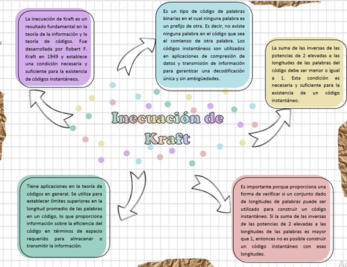
Códigos de línea
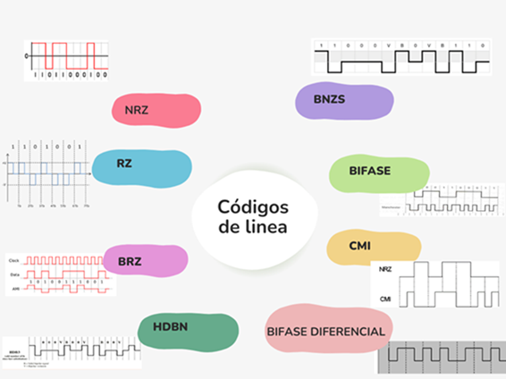
- Código NRZ
- Código RZ
- Código AMI
- Código HDBn
- Código BNRZ
La codificación NRZ también se ha convertido en una codificación sin retorno a cero, que también es nuestra codificación más común, es decir, un nivel positivo indica 1 y un nivel bajo indica 0. La diferencia entre este y el código RZ es que no necesita volver a cero, es decir, se puede usar un ciclo para transmitir datos, de modo que el ancho de banda de transmisión se pueda utilizar por completo.
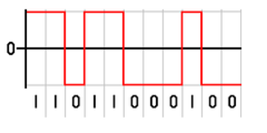
El código RZ también se convierte en el código de retorno a cero. La característica del código de retorno a cero es transmitir bits de datos en binario dentro de un ciclo. Después de que finaliza el pulso de bits de datos, debe mantenerse en un nivel bajo durante un período de tiempo.
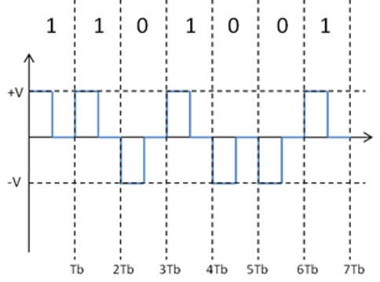
Es un código en línea recomendado para las transmisiones binarias. Se puede definir como un código bipolar con retorno a cero con algunas particularidades que se describen a continuación.
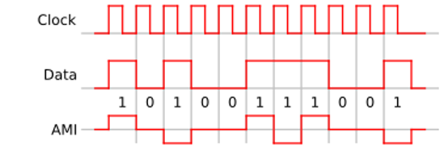
Los códigos HDBN (High Density Bipolar) limitan el número de ceros consecutivos que se pueden transmitir. -HDB3 no admite más de 3 ceros consecutivos. Coloca un impulso (positivo o negativo) en el lugar del 4.º cero. El receptor tiene que interpretar este impulso como un cero
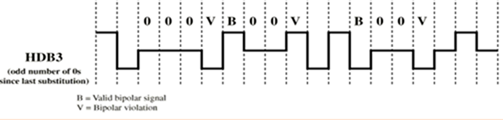
Es un método de codificación que inserta dos veces sucesivas al mismo voltaje - refiriéndose a una violación bipolar - en una señal donde ocho ceros consecutivos sean transmitidos.
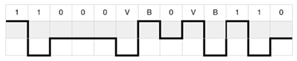
BIBLIOGRAFÍA
- A. Hernandez, Redes y Servicios Moviles GSM y GPRS, 2015.
- Á. Pinto, J. Torres, A. García, N. Pérez y J. Uzcátegui, «Modelo para Estimación de Pérdidas de Propagación en Sistema de Televisión Digital Abierta,» 2016.
- P. Yanez, «EPN,» Febrero 2009. [En línea]. Available: https://bibdigital.epn.edu.ec/bitstream/15000/1455/1/CD-2729.pdf.
- GSMA, «GSMA,» Julio 2012. [En línea]. Available: https://www.gsma.com/latinamerica/wp-content/uploads/2012/08/GSMA-Mobile-roaming-web-Spanish.pdf
- A. Veleastegui, «BIBING,» 2014. [En línea]. Available: http://bibing.us.es/proyectos/abreproy/12081/fichero/OFDMA+y+SC-FDMA+en+la+Interfaz+Radio+de+LTE%252F4.+T%C3%
A9cnicas+de+acceso+m%C3%BAltiple.+OFDMA+y+SC-FDMA.pdf - L. Chang y R. Hsing, Handbook of Visual Communications, 1995.